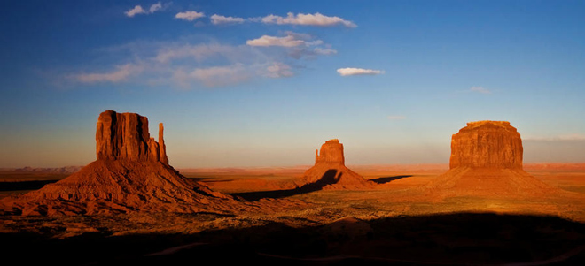
.
Monument Valley is characterised by a cluster of vast sandstone buttes, the largest reaching 1,000 ft (300m) above the valley floor. Located on the Arizona–Utah border, Monument Valley has been featured in many forms of media since the 1930s. Director John Ford used the location for a number of his best-known films and thus, in the words of a film critic "its five square miles have defined what decades of moviegoers think of when they imagine the American West".
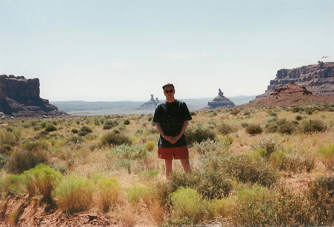
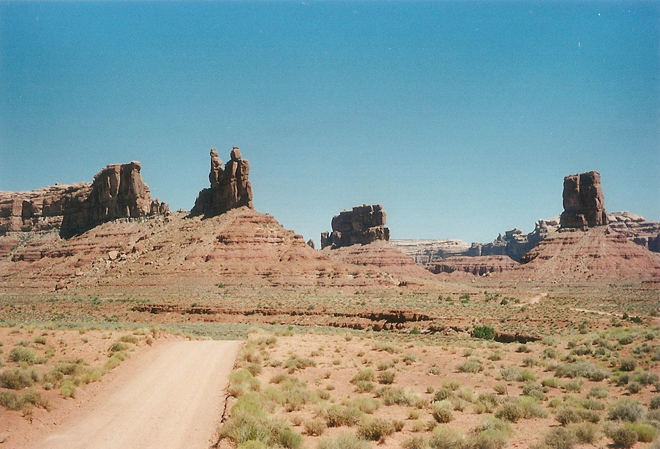
The buttes are clearly stratified, with three principal layers. The lowest layer is the Organ Rock Shale, the middle is de Chelly Sandstone, and the top layer is the Moenkopi Formation capped by Shinarump Conglomerate. The valley includes large stone structures including the famed 'Eye of the Sun'.
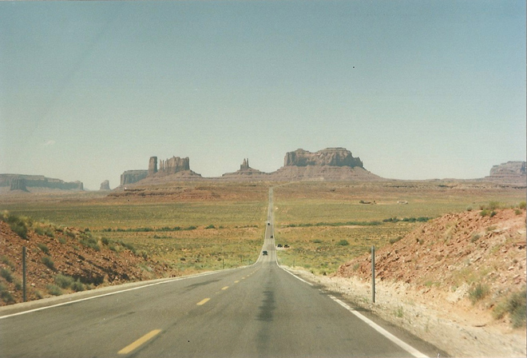
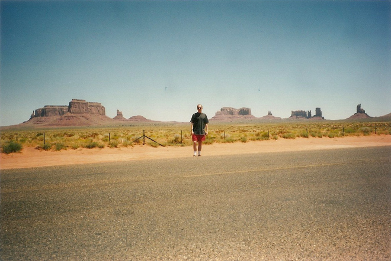
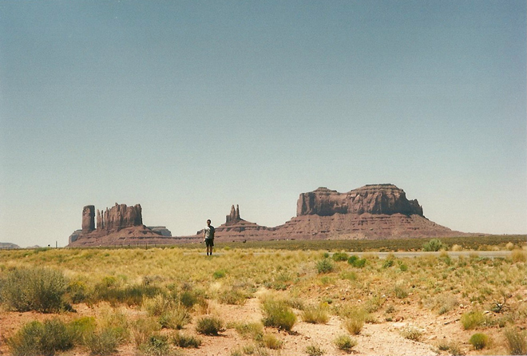
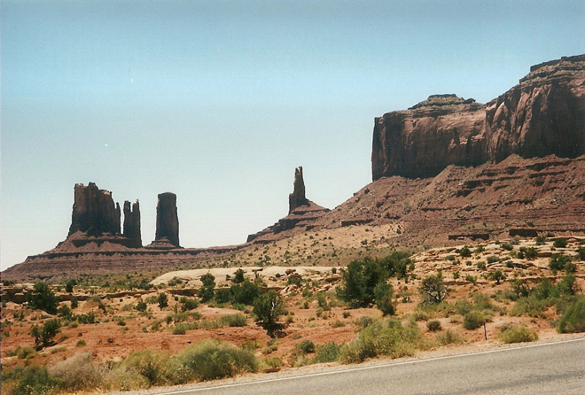
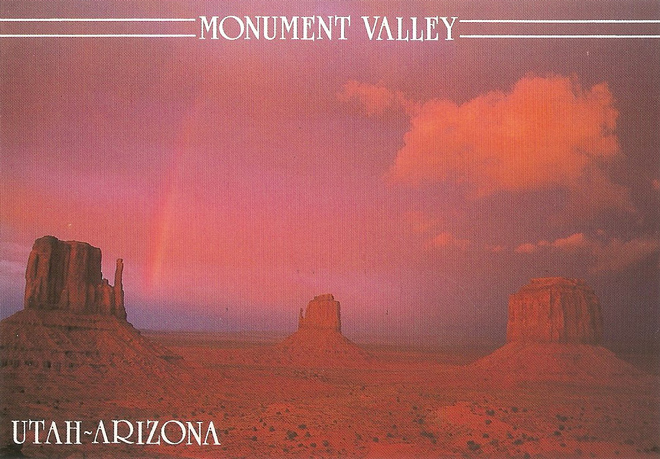
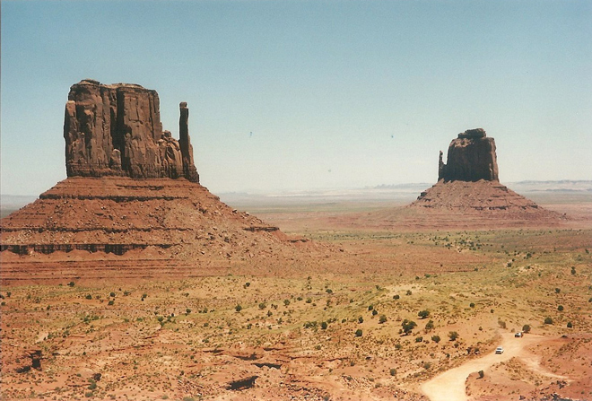
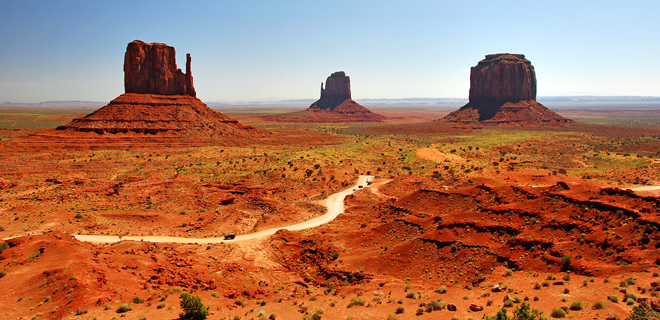
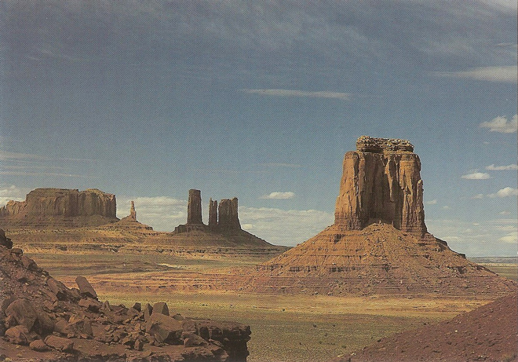
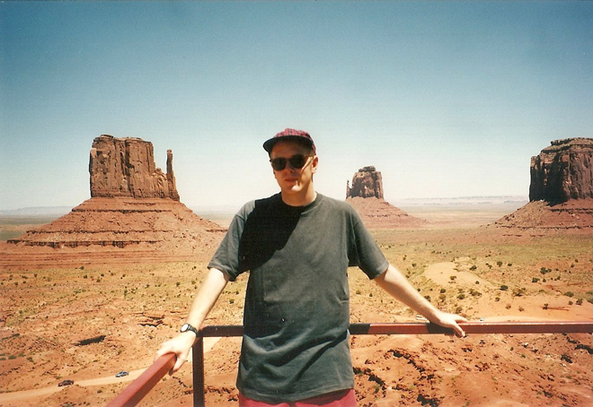
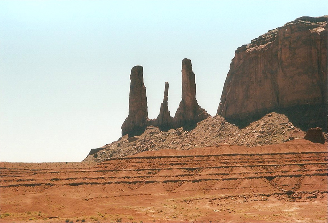
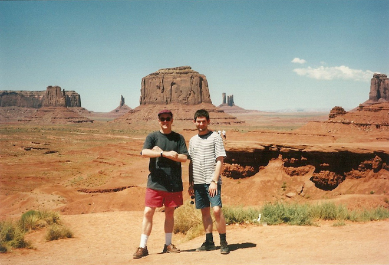
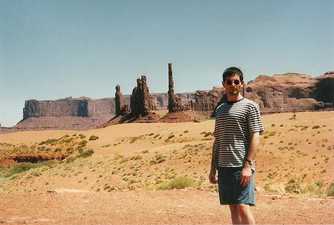
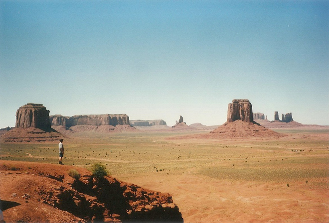
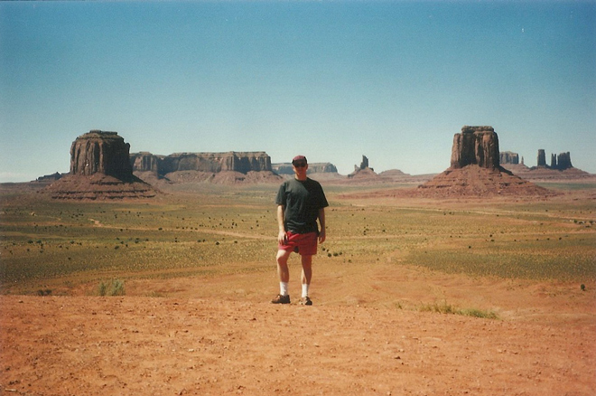
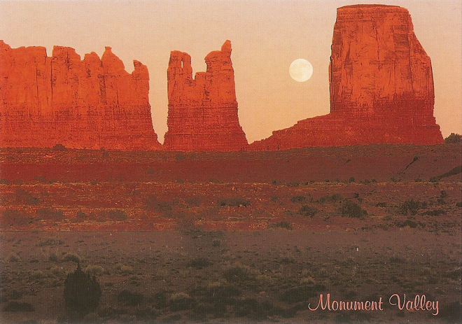
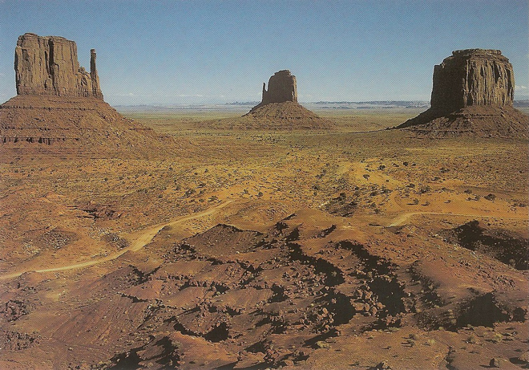
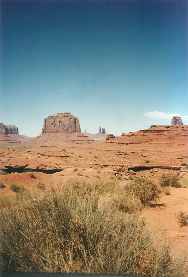
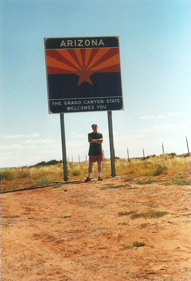
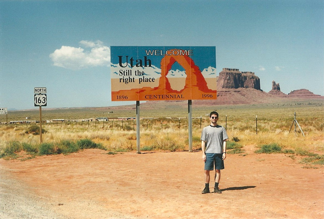